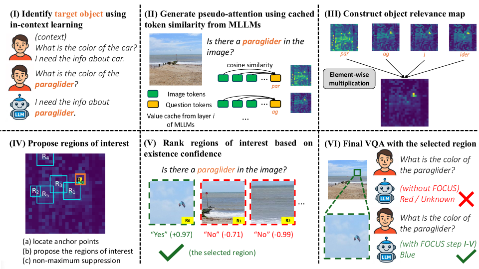
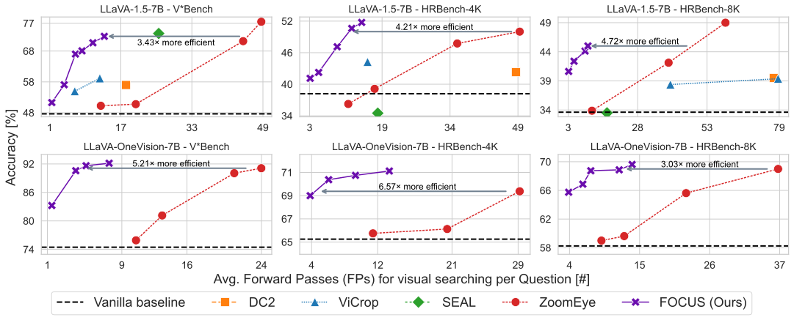
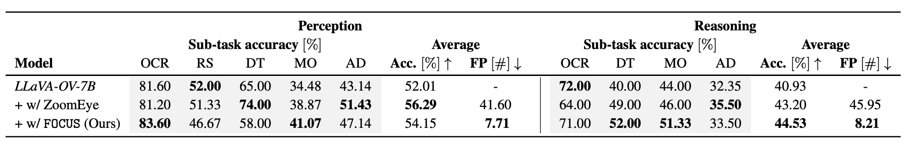

FOCUS: Internal MLLM Representations for Efficient Fine-Grained VQA
Abstract
While Multimodal Large Language Models (MLLMs) offer strong perception and reasoning capabilities for image-text input, Visual Question Answering (VQA) focusing on small image details still remains a challenge. Although visual cropping techniques seem promising, recent approaches have several limitations: the need for task-specific fine-tuning, low efficiency due to uninformed exhaustive search, or incompatibility with efficient attention implementations. We address these shortcomings by proposing a training-free visual cropping method, dubbed FOCUS, that leverages MLLM-internal representations to guide the search for the most relevant image region. This is accomplished in four steps: first, we identify the target object(s) in the VQA prompt; second, we compute an object relevance map using the key-value (KV) cache; third, we propose and rank relevant image regions based on the map; and finally, we perform the fine-grained VQA task using the top-ranked region. As a result of this informed search strategy, FOCUS achieves strong performance across four fine-grained VQA datasets and three types of MLLMs. It outperforms three popular visual cropping methods in both accuracy and efficiency, and matches the best-performing baseline, ZoomEye, while requiring 3 – 6.5× less compute.
Fine-Grained VQA is Underexplored
While MLLMs demonstrate impressive capabilities on regular VQA tasks, they often struggle with fine-grained VQA that requires attention to small details in images. Recent MLLMs such as LLaVA-OneVision try to address this issue by processing additional local crops extracted from the original images. However, their effectiveness on fine-grained VQA tasks still remains limited. An orthogonal research direction to address this limitation is visual cropping approaches, which seek to pass only relevant image regions to the MLLM. However, popular visual cropping techniques like SEAL, DC2, ZoomEye and ViCrop suffer from one or more of the following limitations (see part (b) of the figure above): (1) reliance on task-specific fine-tuning of MLLMs for fine-grained VQA, (2) use of inefficient, exhaustive tree search algorithms, and (3) dependence on Q-K attention weight and therefore incompatiblility with efficient attention implementations such as FlashAttention. Moreover, progress on small-object VQA is enabled by the availability of fine-detail VQA datasets like V*Bench. See part (a) of the figure for its object size statistics and how it compares to traditional VQA datasets.
FOCUS: Fine-Grained Visual Object Cropping
Using Cached Token Similarity

We propose a visual cropping method, termed Fine-grained visual Object Cropping Using cached token Similarity (FOCUS), that addresses these issues as is outlined in the following. To tackle limitation (1), FOCUS leverages the internal representations of MLLMs, specifically their key-value (KV) caches, to localize question-relevant image regions in a training-free manner — unlike the SEAL technique. Moreover, to mitigate limitation (2), our method includes textual clues to enable object-aware localization without exhaustive cropping of the image, thereby improving the algorithmic efficiency — different from DC2 and ZoomEye. To overcome limitation (3), FOCUS utilizes the cached value features readily available during inference, making it natively compatible with efficient attention implementations — unlike ViCrop that depends on full attention weights. Specifically, FOCUS combines these components as follows:
- For each VQA question, we first identify the target object(s) in the question prompt.
- Second, we construct an object relevance map using cosine similarity between the cached text tokens of the target object(s) and the cached image tokens, and then propose relevant regions based on this map.
- Third, we rank the proposed image regions based on the existence confidence of the target object in each region.
- Finally, we perform VQA solely based on the image region with the highest confidence.
Results

We conduct experiments with LLaVA-1.5 and LLaVA-OneVision on V*Bench, HRBench-4K, and HRBench-8K. Overall, FOCUS outperforms three popular visual cropping methods (SEAL, ViCrop and DC2) in both accuracy and efficiency, and matches the best-performing baseline, ZoomEye, while requiring 3 – 6.5× less compute. FOCUS with LLaVA-1.5 achieves an accuracy of 72.77% on V*Bench, 51.75% on HRBench-4K, and 45.00% on HRBench-8K. FOCUS with LLaVA-OneVision achieves an accuracy of 92.15% on V*Bench, 71.13% on HRBench-4K, and 69.63% on HRBench-8K. See the plot above for details.

Furthermore, we perform an additional evaluation on MME-RealWorld-Lite. FOCUS outperforms the vanilla baseline on most sub-tasks. Taking a closer look, ZoomEye and our method have strengths in different domains. FOCUS is better for reasoning, while ZoomEye is better at perception tasks. With regard to compute, our method is on average 5.47× more efficient than ZoomEye. See the table above for details.
Moreover, we use FOCUS with Qwen-2.5-VL, the current state-of-the-art MLLM. Qwen-2.5-VL processes high-resolution images with native resolution, thereby preserving spatial details more effectively. We evaluate FOCUS with Qwen-2.5-VL-7B and find state-of-the-art accuracy on HRBench-4K and HRBench-8K, 79.25% and 76.25%, respectively. This confirms the compatibility of FOCUS with different MLLM architectures. See the table above for details.
Qualitative Examples
We provide some exemplary inferences with our method for single-target tasks with LLaVA-1.5 (I) and multiple-target tasks with LLaVA-OneVision (II). The Ground Truth (GT) locations are highlighted in red in the original image. Further, we show the detected image regions and their locations in the object relevance map. Note that the object relevance maps corresponds to the original images.
Further qualitative examples of FOCUS with LLaVA-1.5. We provide examples for single-object (I), multi-object (II), a type-2 question (III), and a failure case (IV). Note that we do not adjust the aspect ratio of the images for LLaVA-1.5. Therefore, there are some padding areas in the object relevance maps. Additionally, we manually highlight the relevant regions in the original image to facilitate easier localization of the ground truth area for the reader and these annotations are not included in the input for the MLLM.
Further qualitative examples of FOCUS with LLaVA-OneVision. We provide examples for single-object (I), multi-object (II), a type-2 question (III), and a failure case (IV). Note that we manually highlight the relevant regions in the original image to facilitate easier localization of the ground truth area for the reader and these annotations are not included in the input for the MLLM.
Poster
BibTeX
@article{zhong2025focus,
author = {Liangyu Zhong and
Fabio Rosenthal and
Joachim Sicking and
Fabian H{\"{u}}ger and
Thorsten Bagdonat and
Hanno Gottschalk and
Leo Schwinn},
title = {{FOCUS:} Internal {MLLM} Representations for Efficient Fine-Grained
Visual Question Answering},
journal = {arXiv},
volume = {abs/2506.21710},
year = {2025},
url = {https://doi.org/10.48550/arXiv.2506.21710},
doi = {10.48550/ARXIV.2506.21710},
}